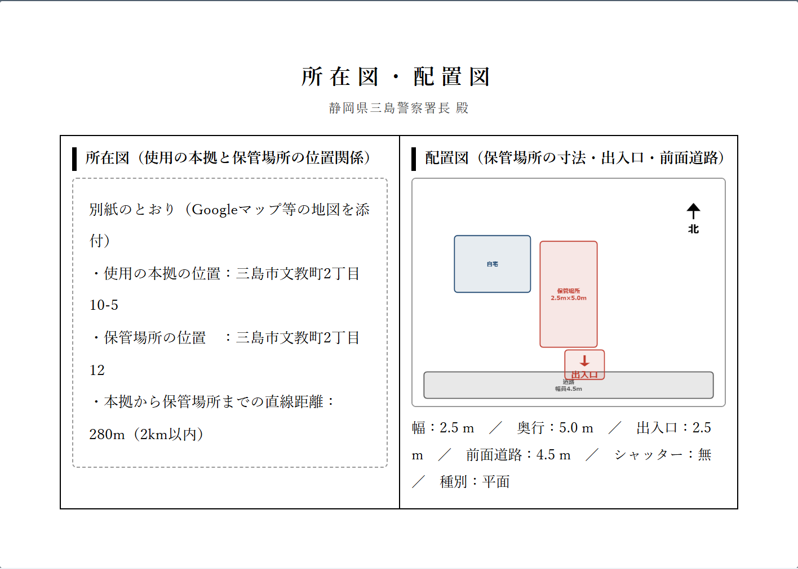
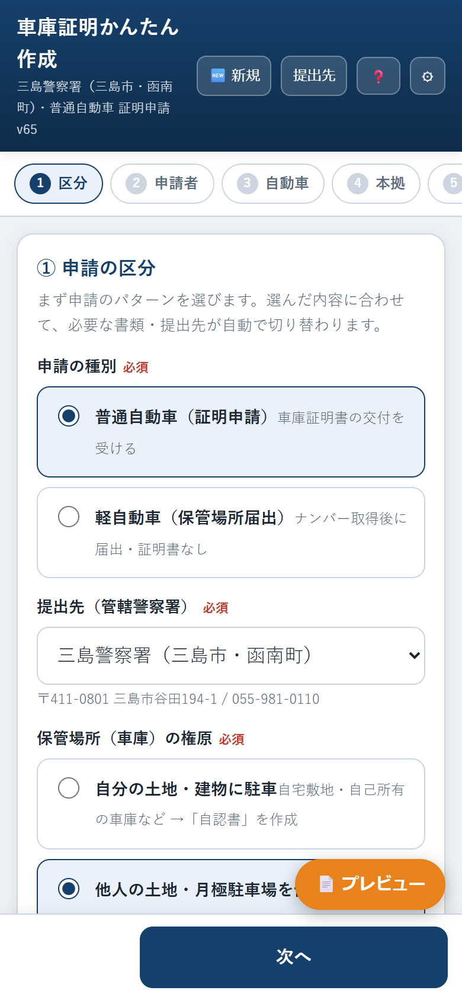
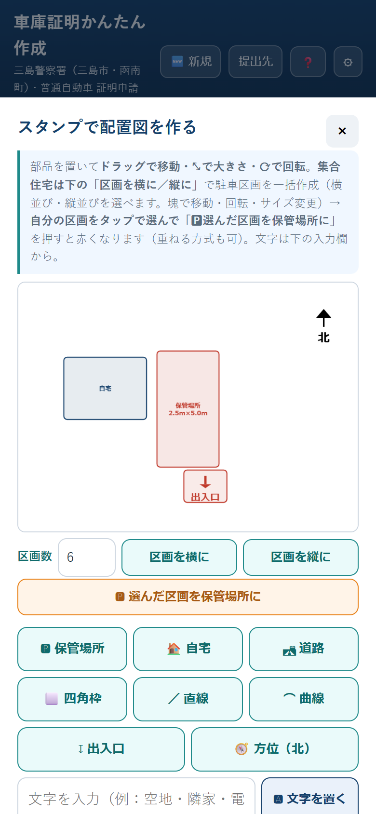
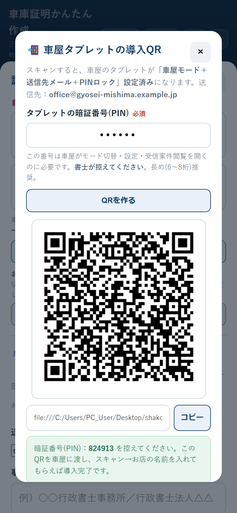

申請書や配置図など、提出に必要な書類一式を1回の入力から自動作成。静岡県 全28署（西部・中部・東部）に対応し、車屋やお客様に入力を任せることもできます。


件数をこなすほど、入力・作図・地域ごとの確認作業が積み上がっていきます。
申請書・自認書／承諾書・所在図配置図・チェックリスト。件名ごとに同じ住所や車の情報を書類分だけ入力し直している。
提出先の警察署、軽自動車の届出義務の有無、合併前の旧町村部の例外まで、案件のたびに確認が必要。
保管場所・自宅・道路・出入口・方位。手描きや汎用ソフトでの作図は時間がかかり、車屋との連携も電話やFAXが中心。
静岡県内の実際の様式・地域差に合わせて自動で切り替わります。
申請書（または軽の届出書）や配置図など、提出に必要な書類一式に自動転記。使用承諾証明書は権利者記入用の書式も出力できます。あとは印刷／PDF化するだけ。
西部11署・中部7署・東部10署を収録。提出先を選ぶだけで宛先・所在地・手数料・軽自動車の届出要否が自動で切り替わります。
市町村単位の届出義務に加え、合併前の旧町村部の例外（旧戸田村・旧岡部町など）まで反映。判断ミスを防ぎます。
保管場所・自宅・道路・出入口・方位などの部品を置くだけで作図。集合住宅は区画を一括生成、区画ごとの寸法表示にも対応。
車屋のタブレットやお客様自身のスマホで入力してもらい、事務所へ送信。事務所は届いたリンクを開いて確認・印刷するだけ。
入力内容は端末内のみで保持し、サーバーには保存しません。車屋へ配布する端末はQR一発でPINロック済みにできます。
行政書士がすべて入力することも、車屋・お客様に任せることもできます。
行政書士・車屋・お客様のいずれかが、スマホ／PCで案件情報を入力。
「事務所へ送信」でメール・Gmail・リンクとして送るだけ。サーバー不要。
事務所が届いたリンクを開くと、入力済みの状態でそのまま開きます。
内容を確認して印刷／PDF化。正・副2通をそのまま窓口へ提出できます。

保管場所・自宅・道路・出入口・方位（北）などのスタンプをドラッグで配置。大きさ・向きも自由に調整でき、集合住宅の区画は一括生成に対応しています。
送信先メール・暗証番号(PIN)ロックまで設定済みのQRを作成。車屋はスキャンして店名を入れるだけで導入完了。以降は暗証番号なしでは事務所モードへ戻せず、送信先も変更できません。

提出先を選ぶだけで、宛先・所在地・手数料・軽自動車の届出要否が自動切替。
オレンジ＝軽自動車の届出義務あり地域（一部に例外の町村を含む）
依頼者の情報を預かる仕事だからこそ、扱いは慎重に設計しています。
入力内容はブラウザの端末内のみで保持。運営者のサーバーにデータを送信・保存する仕組みは持っていません。
「事務所へ送信」を押したときにだけ、設定した宛先へメール・リンクとして届きます。
車屋に配布する端末は、暗証番号がないとモード切替・送信先変更・データ消去ができない設定にできます。
まずは無料でお試しいただき、納得してからの導入で構いません。
お申し込み後、お支払いの確認ができ次第、数営業日以内にご登録のメールアドレス宛にアプリのご利用リンクをお送りします。
🚀 今すぐ申し込む ✉️ その前に相談する メールが開かない場合はGmailで相談する